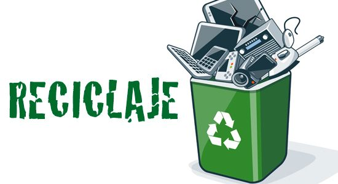
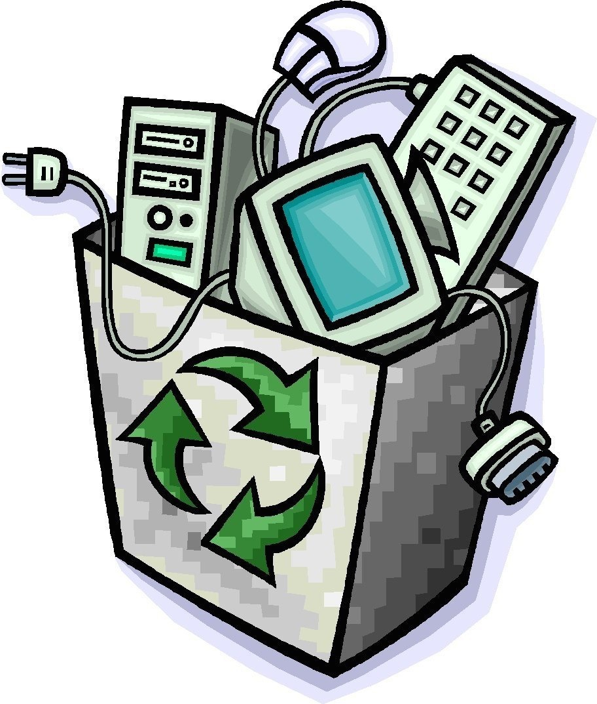

Somos un proyecto que tiene como fin coadyuvar los impactos ambientales ocasionados por la generación y mala disposición de Residuos Eléctricos y Electrónicos (RAEE), por lo cual realizamos actividades relacionadas con el reciclaje de chatarra electrónica apegadas a un estricto desarrollo sustentable.
Ser una empresa líder e innovadora en soluciones integrales para la reutilización y canalización de residuos electrónicos, brindando a nuestros clientes la confianza de el correcto manejo de sus residuos.
Fomentar la reutilización de residuos electrónicos, disminuyendo el impacto ambiental y maximizando el valor de los activos electrónicos.
Si deseas deshacerte de chatarra electrónica tal como computadoras obsoletas, no breaks, tarjetas de circuitos electrónicos, cables de cobre, así como cualquier otro electrónico viejo u obsoleto no dudes en contactarnos, somos la mejor opción para un manejo adecuado. Cuando entregas tu chatarra electrónica a una empresa acreditada como nosotros, contribuyes a mejorar el medio ambiente.
El proceso de reciclaje. Una vez que hemos depositado estos dispositivos en su lugar correspondiente, comienza la gestión de los residuos de los aparatos eléctricos y electrónicos con el objetivo principal de descontaminar y aprovechar los materiales que contienen y mejorar la protección ambiental y fomentar su posible reutilizació
Ayudar al proceso de reciclaje es sencillo. Solo tienes que llevar los equipos que ya no utilices a nuestros centros de acopio. Tienes varias opciones, solo tienes que acudir al mas cercano a tu domicilio
